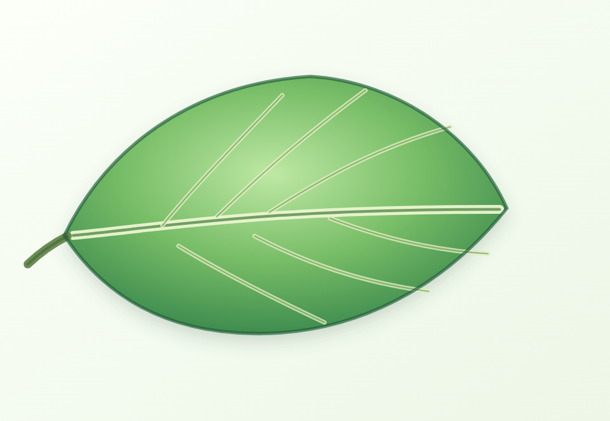

Teaching Lab · предметное изображение и редактируемые подписи
Строение листа: сначала увидеть, потом назвать
Учебный слайд строится вокруг изображения. Подписи, стрелки и задание остаются отдельными слоями, чтобы их можно было править в HTML и PPTX.
Роль изображения
Иллюстрация лежит отдельным PNG-файлом. В реальной презентации его можно заменить фотографией, схемой из источника или сгенерированным рисунком.
Мини-задание
Покажи черешок и объясни, почему подпись должна быть рядом с объектом, а не внутри картинки.
✓

Листовая пластинкаглавная широкая часть листа
Жилкипроводят воду и питательные вещества
Черешоксоединяет лист со стеблем
Край листапомогает различать виды растений